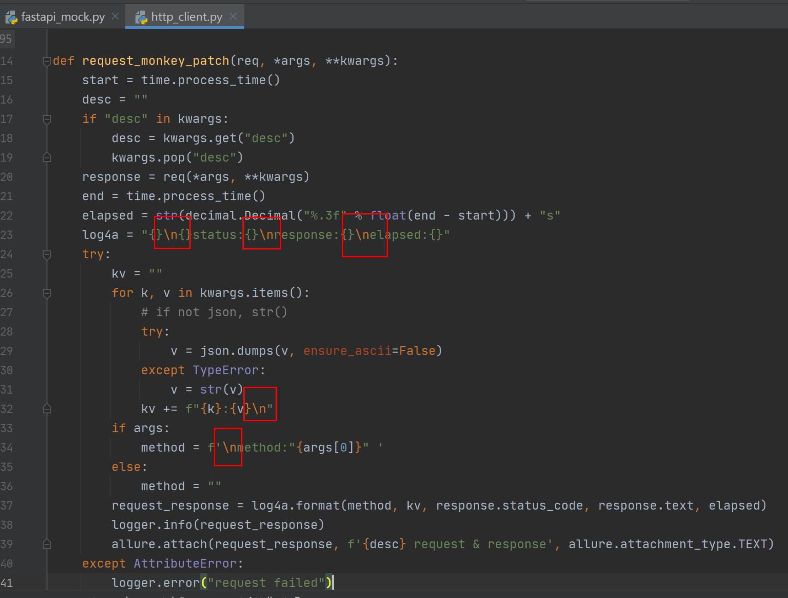
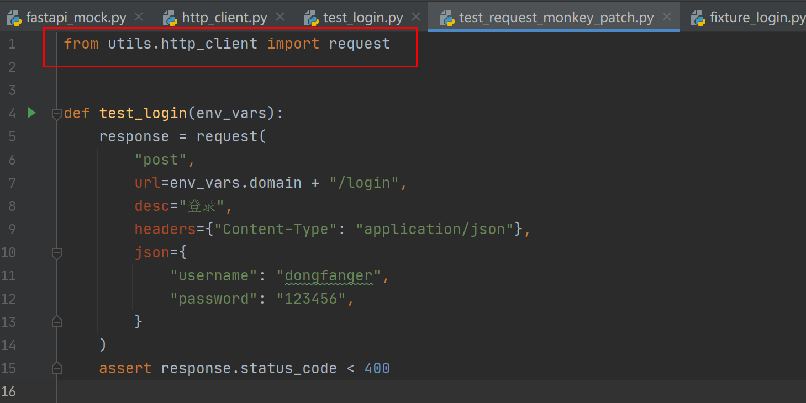
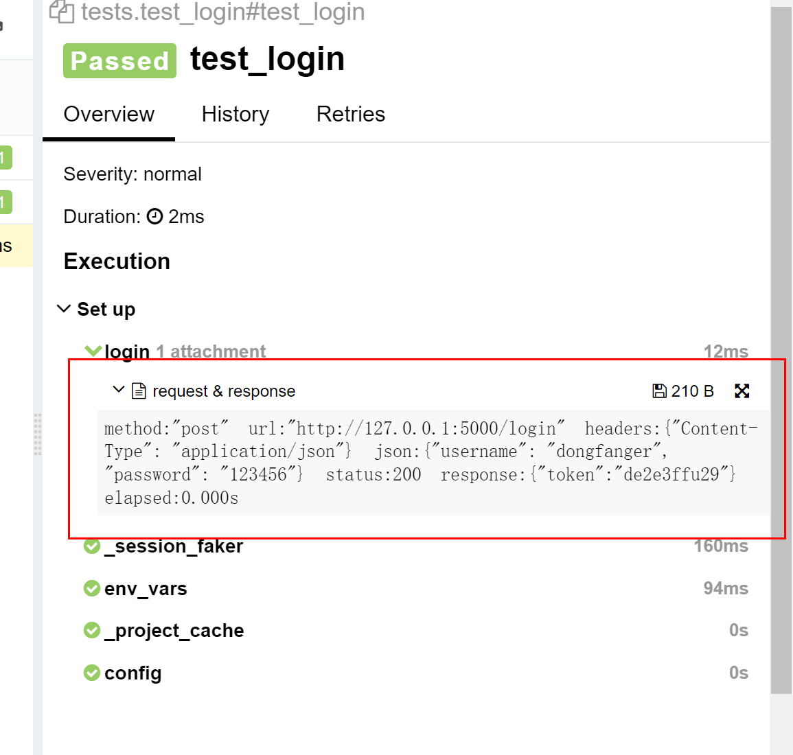
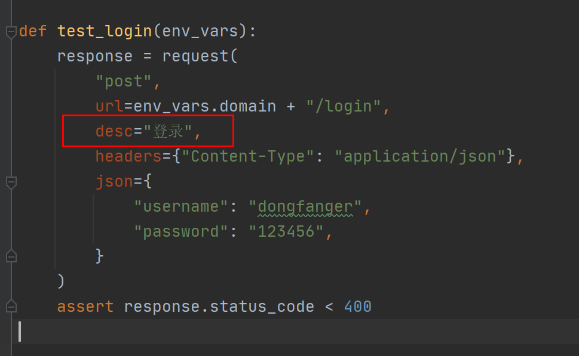
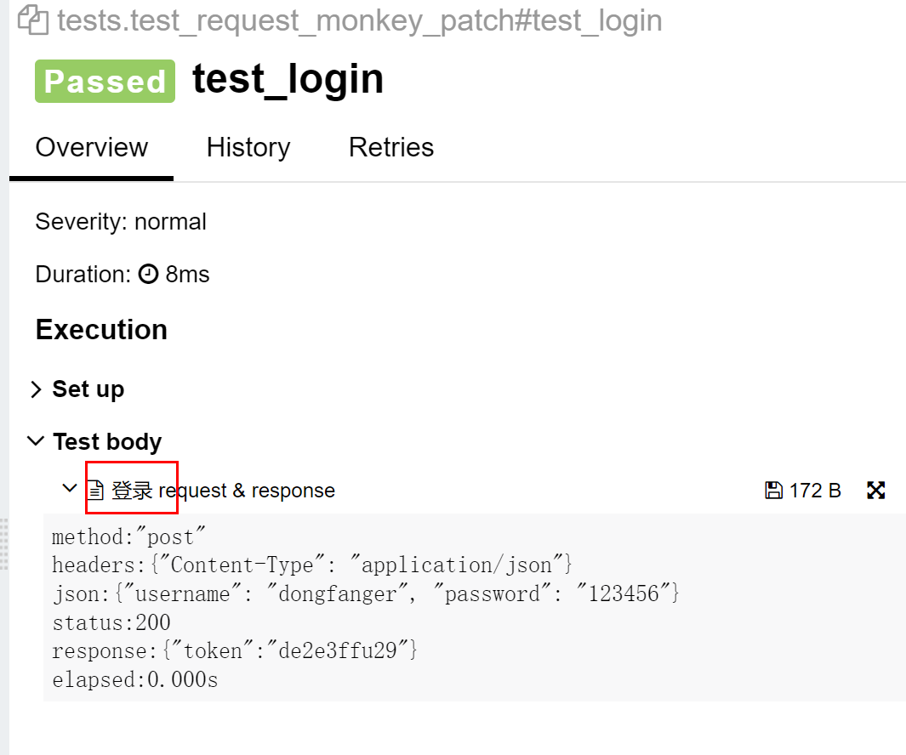
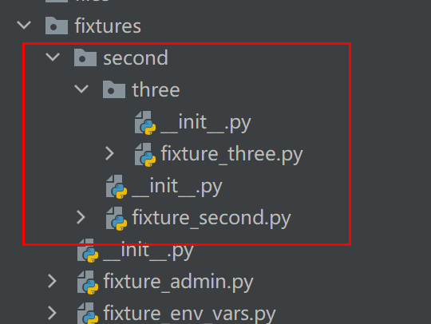

9 tep0.9.5支持自定义扩展request¶

tep0.9.5更新了以下内容：
自定义request请求日志
Allure报告添加request描述
猴子补丁扩展request
fixtures支持多层级目录
FastAPI替代Flask
升级tep到0.9.5版本，使用tep startproject demo创建项目脚手架，开箱即用以上新功能。
1.自定义request请求日志¶
tep默认的request请求日志如下所示：
2022-01-22 20:00:26.335 | INFO | tep.client:tep_request_monkey_patch:44 - method:"post" url:"http://127.0.0.1:5000/login" headers:{"Content-Type": "application/json"} json:{"username": "dongfanger", "password": "123456"} status:200 response:{"token":"de2e3ffu29"} elapsed:0.000s
全部都在一行，假如想换行显示，那么可以在utils/http_client.py文件中修改request_monkey_patch代码：

在测试代码中把from tep.client import request改成from utils.http_client import request：

日志就会变成换行显示了：
2022-01-22 20:04:05.379 | INFO | utils.http_client:request_monkey_patch:38 -
method:"post"
headers:{"Content-Type": "application/json"}
json:{"username": "dongfanger", "password": "123456"}
status:200
response:{"token":"de2e3ffu29"}
elapsed:0.000s
2.Allure报告添加request描述¶
tep的Allure报告默认会有个request & response：

可以给request添加desc参数，在Allure测试报告中添加描述：

运行以下命令，然后打开Allure测试报告：
pytest -s test_request_monkey_patch.py --tep-reports

3.猴子补丁扩展request¶
前面的“自定义request请求日志”和“Allure报告添加request描述”已经展示了如何通过猴子补丁扩展日志和扩展报告，您还可以为request扩展更多想要的功能，只需要实现utils/http_client.py里面的request_monkey_patch函数即可：
#!/usr/bin/python
## encoding=utf-8
import decimal
import json
import time
import allure
from loguru import logger
from tep import client
from tep.client import TepResponse
def request_monkey_patch(req, *args, **kwargs):
start = time.process_time()
desc = ""
if "desc" in kwargs:
desc = kwargs.get("desc")
kwargs.pop("desc")
response = req(*args, **kwargs)
end = time.process_time()
elapsed = str(decimal.Decimal("%.3f" % float(end - start))) + "s"
log4a = "{}\n{}status:{}\nresponse:{}\nelapsed:{}"
try:
kv = ""
for k, v in kwargs.items():
# if not json, str()
try:
v = json.dumps(v, ensure_ascii=False)
except TypeError:
v = str(v)
kv += f"{k}:{v}\n"
if args:
method = f'\nmethod:"{args[0]}" '
else:
method = ""
request_response = log4a.format(method, kv, response.status_code, response.text, elapsed)
logger.info(request_response)
allure.attach(request_response, f'{desc} request & response', allure.attachment_type.TEXT)
except AttributeError:
logger.error("request failed")
except TypeError:
logger.warning(log4a)
return TepResponse(response)
def request(method, url, **kwargs):
client.tep_request_monkey_patch = request_monkey_patch
return client.request(method, url, **kwargs)
4.fixtures支持多层级目录¶
tep之前一直只能支持fixtures的根目录的fixture_*.py文件自动导入，现在能支持多层级目录了：

测试代码test_multi_fixture.py：
#!/usr/bin/python
## encoding=utf-8
def test(fixture_second, fixture_three):
pass
能运行成功。自动导入多层目录的代码实现如下：
## 自动导入fixtures
_fixtures_dir = os.path.join(_project_dir, "fixtures")
for root, _, files in os.walk(_fixtures_dir):
for file in files:
if file.startswith("fixture_") and file.endswith(".py"):
full_path = os.path.join(root, file)
import_path = full_path.replace(_fixtures_dir, "").replace("\\", ".").replace("/", ".").replace(".py", "")
try:
fixture_path = "fixtures" + import_path
exec(f"from {fixture_path} import *")
except:
fixture_path = ".fixtures" + import_path
exec(f"from {fixture_path} import *")
5.FastAPI替代Flask¶
因为HttpRunner用的FastAPI，所以我也把Flask替换成了FastAPI，在utils/fastapi_mock.py文件中可以找到代码实现的简易Mock：
#!/usr/bin/python
## encoding=utf-8
import uvicorn
from fastapi import FastAPI, Request
app = FastAPI()
@app.post("/login")
async def login(req: Request):
body = await req.json()
if body["username"] == "dongfanger" and body["password"] == "123456":
return {"token": "de2e3ffu29"}
return ""
@app.get("/searchSku")
def search_sku(req: Request):
if req.headers.get("token") == "de2e3ffu29" and req.query_params.get("skuName") == "电子书":
return {"skuId": "222", "price": "2.3"}
return ""
@app.post("/addCart")
async def add_cart(req: Request):
body = await req.json()
if req.headers.get("token") == "de2e3ffu29" and body["skuId"] == "222":
return {"skuId": "222", "price": "2.3", "skuNum": "3", "totalPrice": "6.9"}
return ""
@app.post("/order")
async def order(req: Request):
body = await req.json()
if req.headers.get("token") == "de2e3ffu29" and body["skuId"] == "222":
return {"orderId": "333"}
return ""
@app.post("/pay")
async def pay(req: Request):
body = await req.json()
if req.headers.get("token") == "de2e3ffu29" and body["orderId"] == "333":
return {"success": "true"}
return ""
if __name__ == '__main__':
uvicorn.run("fastapi_mock:app", host="127.0.0.1", port=5000)
最后，感谢@zhangwk02提交的Pull requests，虽然写的代码被我全部优化了，但是提供了很棒的想法和动力。